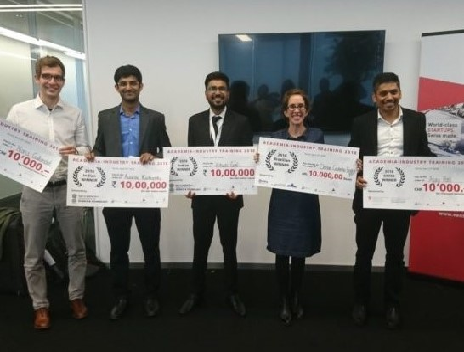
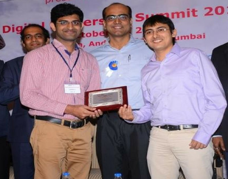

2 NOVEMBER 2019
Three IIT-B start-ups build smart healthcare products
With healthcare being the fastest growing industry in India’s start-up eco-system, a host of medical technology start-ups have mushroomed within the campus of the Indian Institute of Technology-Bombay (IIT-B). […]
11 FEBRUARY 2019

Winners at the Maharashtra Startup Week
The Maharashtra State Innovation Society (MSInS) organises the Maharashtra Startup Week to support the startup ecosystem in the state and gives a platform for budding entrepreneurs to grow by showcasing their innovative solutions […]
3 FEBRUARY 2019

Artificial Intelligence Innovation Challenge
Ayu Devices was declared winner of the Artificial Intelligence Innovation Challenge 2019 for 'Outstanding Innovation in Healthcare'.
30 APRIL 2018
The frugal innovators at IIT-Bombay
At MEDIC 2015, a five-day hackathon held at IIT-Bombay, two friends, both engineers, decided to find a solution for the 2.8 million people who die of heart or lung diseases in India every year […]
29 MAY 2018

Exclusive Interview with Mr. Adarsha K, CEO, Ayu Devices Pvt. Ltd.
Ayu Devices is a technology based healthcare company spun out of BETiC, IIT Bombay. Their innovative medical devices and services enable early screening of heart and lung diseases – the top two killers worldwide […]
15 MAY 2018

Engineers Invent Low-Cost Digital Stethoscope For Better Village Healthcare
Adarsha K and Tapas Pandey teamed up with Dr Nambiraj Konar to develop a digital stethoscope for the MEDIC showcase in 2015. Their prototype could amplify heartbeats and lung sounds, record the audio […]
3 MAY 2018